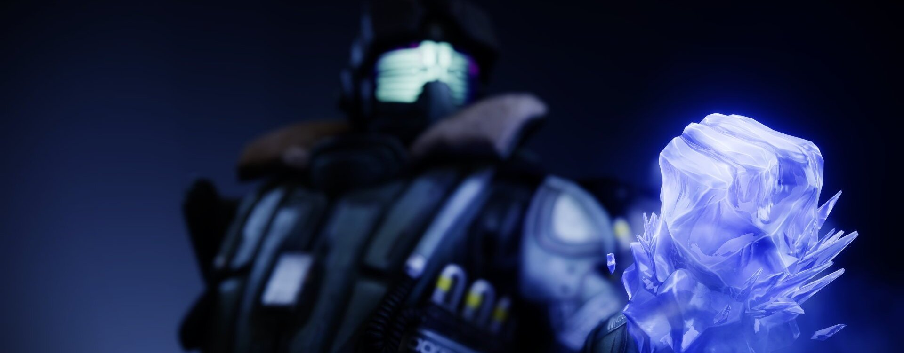
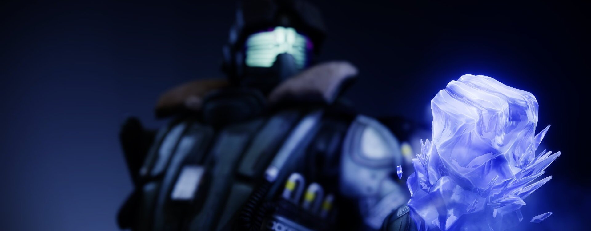

Le Titan
Les Titans sont des guerriers, héros et champions de la Lumière, qui se servent des dons du Voyageur pour faire la guerre aux Ténèbres. Confiants et résolus, les Titans ne reculent jamais devant l'adversité. Leur force brute est au service de la volonté du Voyageur
Le sol se mit à crépiter et à s'ouvrir alors que les canons brûleurs et les fusils martelaient mon abri de toutes les directions. Les rangs des Déchus étaient traversés par l'écho de leurs cris de guerre, et je succombai peu à peu au désespoir. C'est alors que j'entendis un murmure, une proposition. Je fermai les yeux et l'acceptai.
Le froid m'enlaça, étouffant le bruit des combats au point de le réduire à un écho lointain. Je contractai mes gants et sentis le rugissement des glaciers qui raclaient le squelette de ce monde.
Je fracassai mes poings sur le sol. Des obélisques de givre surgirent et transformèrent les Rebuts et les Vandales en effigies sans défense. Dans les innombrables reflets des cristaux qui enveloppaient mes ennemis, je pus contempler leur effroi. Je ressentis leur imploration désespérée. Au moment de relâcher mon emprise, je brisai leurs espoirs.
Béhémot
Tremblement glaciaire
Invoquez un gantelet de stase. Tant que votre Super est actif :
Frapper votre gantelet au sol pour créer une onde de choc qui gèle les cibles et projette des cristaux stasiques pour geler des cibles supplémentaires.
Surchargez votre Frappe frissonnante pour un bonus de dégâts. Sprintez à travers les cristaux stasiques ou les cibles gelées pour les briser instantanément.
- Grenades